Festina and Lotus Connected D Landing Pages Design
Website design and development for two connected watch brands within the same group.

Background
Festina and Lotus are two brands from the Festina Group. Each brand launched a new Connected Watch collection.
- Festina Connected D focuses on a classic and elegant style, combining tradition and technology.
- Lotus Hybrid Connected has a modern and youthful design, created for an active lifestyle.
project overview
The goal of the project was to design two landing pages for different brands within the same group. The main challenge was to keep a consistent structure while allowing each brand to express its own identity. Using a shared layout helped speed up the process and meet tight deadlines.
my role
I was responsible for the UI design and visual experience of both landing pages. I worked closely with development and marketing teams in Spain, and with strategy teams in Sweden, to ensure the design was clear, consistent, and easy to build and maintain.
Case study in 1 minute
- Project: Two landing pages for Festina and Lotus connected watches
- Role: UI Designer, responsible for visual design and component creation
- Challenge: Keep a consistent structure while clearly expressing two different brand identities
- Solution: A shared layout system with brand-specific visual styles and one new reusable component
- Result: Two clear and consistent landing pages, optimized for desktop and mobile
Design strategy
Concept for Festina Connected D
Timeless elegance meets smart technology - For Festina, the design needed to feel premium and familiar. The interface balances tradition and technology, making smart features easy to understand without losing elegance.
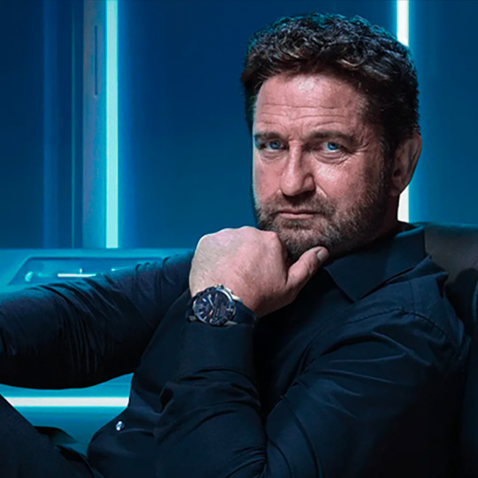
Quality
A refined visual language that highlights craftsmanship, materials, and attention to detail.
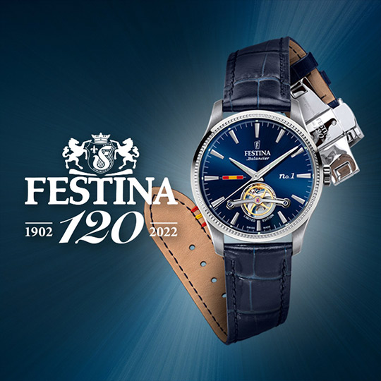
Tradition
Classic watchmaking codes translated into a modern digital experience.
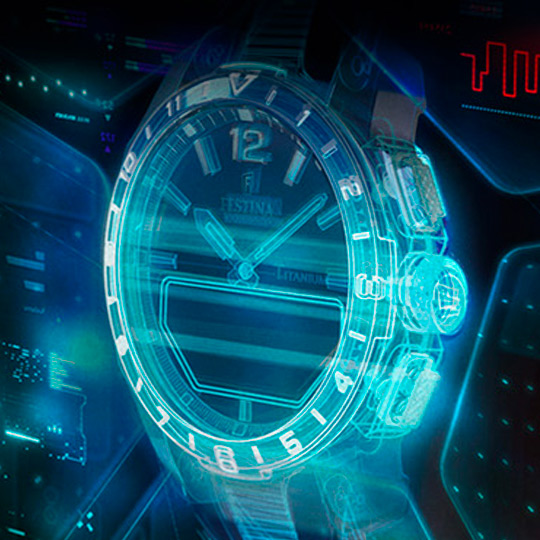
Technology
Smart features presented in a clear and structured way, without losing elegance.
Concept for Lotus Hybrid Connected
Modern design for an active lifestyle - For Lotus, the focus was on clarity and energy. The design highlights key features early, helping users quickly understand what the watch can do in everyday situations.
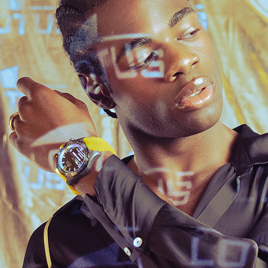
Sophistication
A bold and modern aesthetic designed to feel fresh and contemporary.
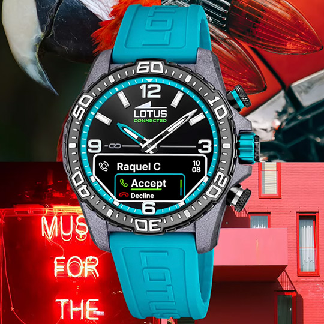
Versatility
The watch adapts easily to different moments of the day, from work to active time.
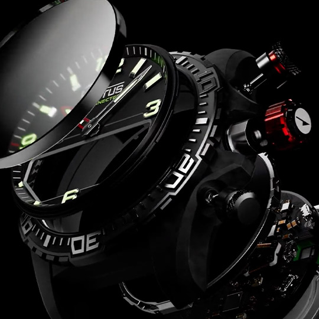
Smart Features
Key functionalities like notifications and activity tracking are easy to discover and use.
UI/UX Approach
My UI/UX approach focused on creating a clear and easy experience, while keeping a strong visual identity for each brand. These principles guided the design decisions:
- Navigation & User Flow: Simple layouts that help users understand the product and move forward easily
- Visual Hierarchy: Clear CTAs (for example, “See Collection”) that support discovery and guide users to the next step
- White Space & Balance: Clean layouts that improve readability and reduce visual noise
- Component-Based Design: Reusing existing components and designing one new component to support large images with text, while keeping consistency and making development easier
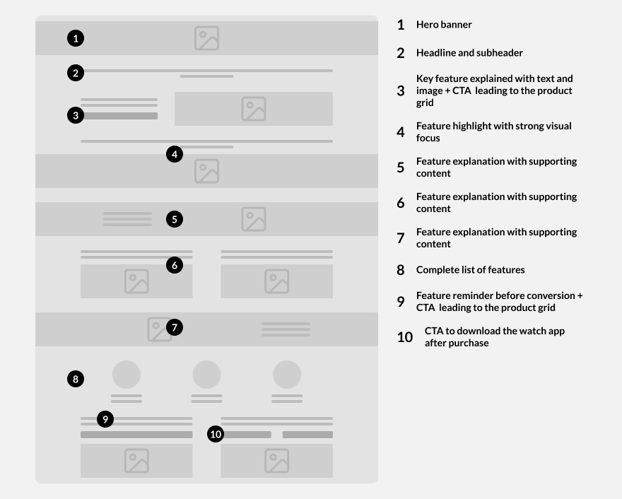
A simplified Landing page structure overview showing how different sections, content types, and CTAs are combined across the landing pages.
From Discovery to Purchase
This part of the design focused on guiding users from the first interaction to the product pages in a natural way. Clear CTAs and a consistent layout help users explore the collection and move forward without feeling lost.
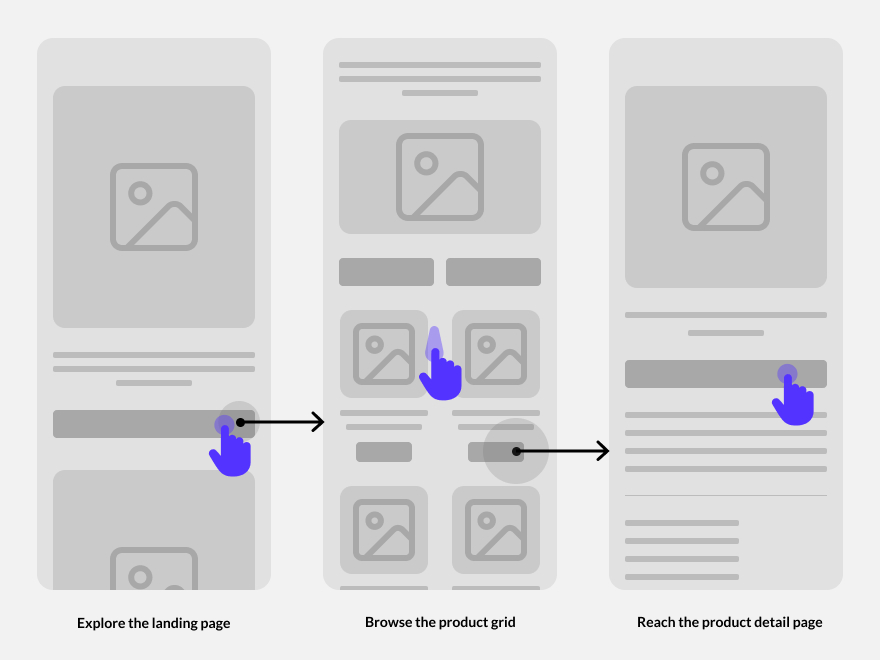
Clear navigation and CTAs help users explore the products and reach the product page.
Performance & cross-device
The experience was designed to work across desktop and mobile by adapting layouts to different screen sizes. On smaller screens, text and visual elements were adjusted to improve readability and scanning.
Content adaptation across devices
Feature-rich sections were adapted for smaller screens by reducing text size and icon size, while keeping the same structure. These adjustments made the content easier to scan on mobile devices.
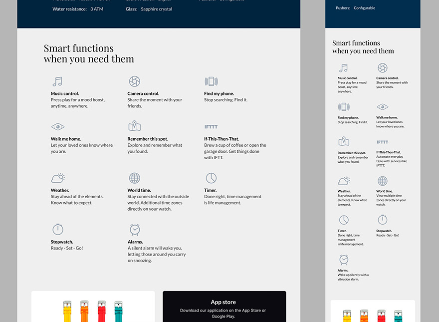
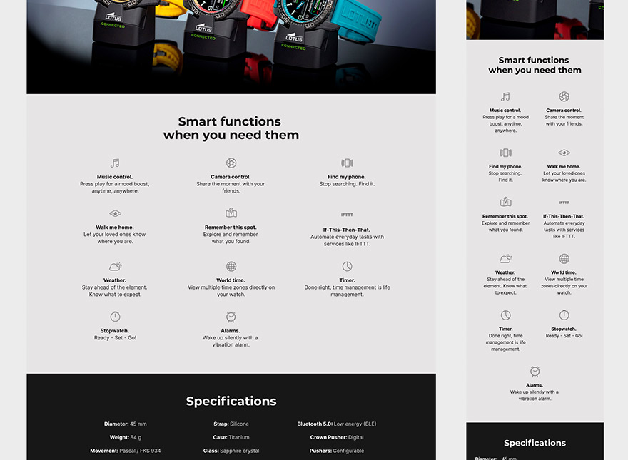
These adjustments helped ensure a consistent experience across devices, while improving readability and performance on mobile.
Optimizing Images for Performance
The original visual assets were large and not optimized for the web. Image dimensions were adjusted to reduce unnecessary bandwidth usage.
Images were optimized to keep good visual quality while improving loading speed across devices.
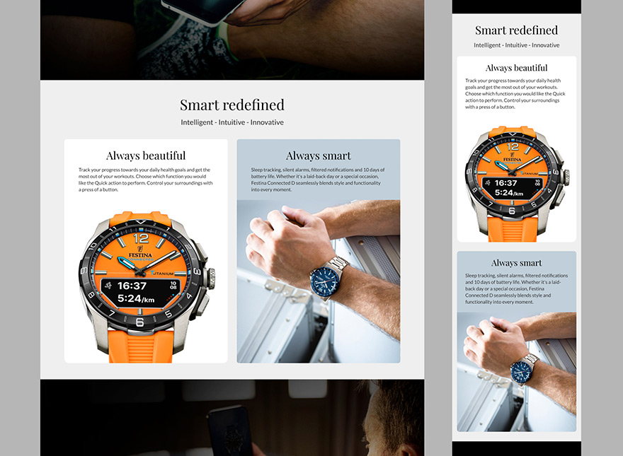
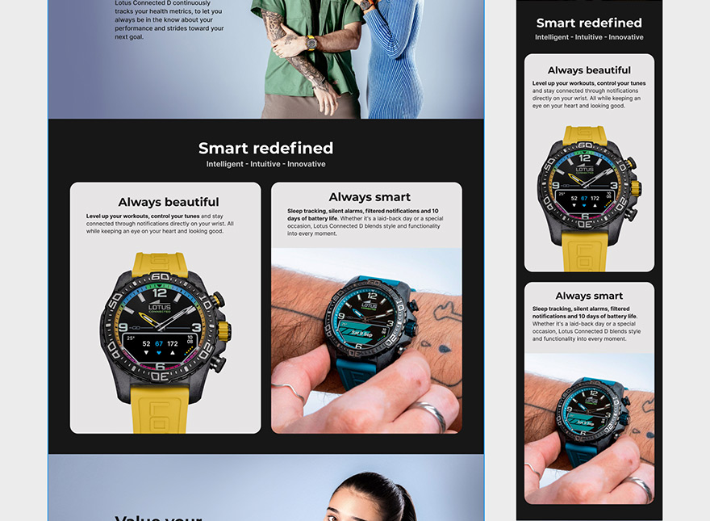
Images were optimized for the web by adjusting size and layout, improving performance without losing visual quality.
This approach ensured a consistent and efficient experience across devices, balancing design quality and performance.
One new component
One new component was created during this project to support large background images with text overlays. The goal was to present the watches in a more visual and modern way, giving strong focus to the product while keeping the message clear. This approach is commonly used by contemporary brands to highlight design details and materials. The component was designed to solve this specific need while being flexible enough to reuse across different websites.
Purpose
Text overlay component used for hero sections and full-width background images.
Application
Used to highlight key messages and features without distracting from the product.
Flexibility
Text position, alignment, and size can be adjusted to work across desktop and mobile layouts.
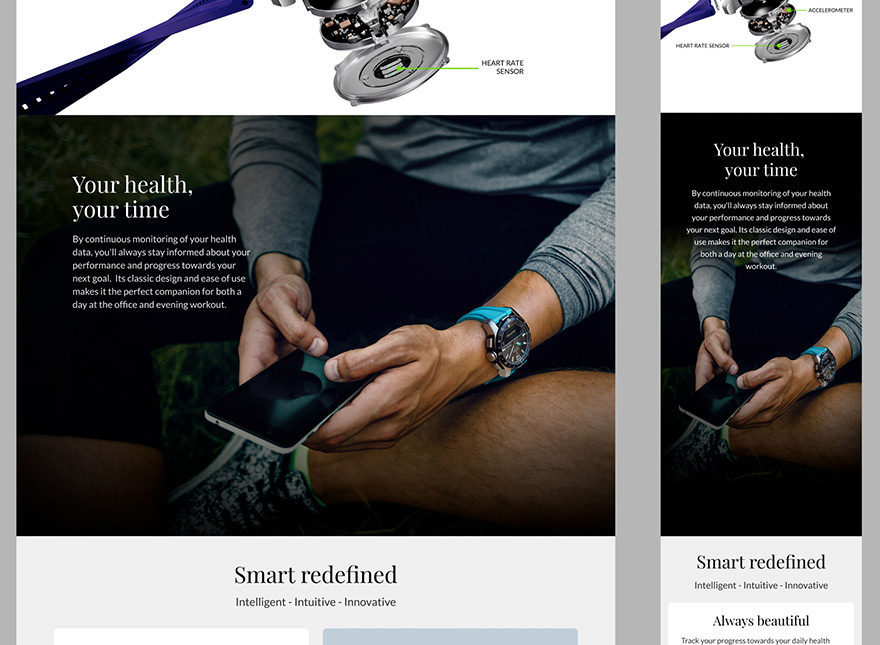
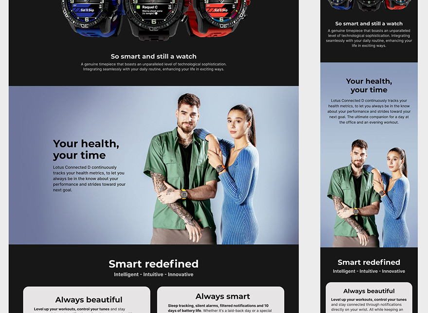
The same text overlay component was reused across both brands, adapting to different visual styles while keeping a consistent structure.
After implementing this component across both landing pages, the final step was to review the live pages and refine details before launch.
Post-development QA & refinements
After development, I reviewed the final pages to ensure the new component and all other elements were consistent, easy to use, and performed well across desktop and mobile devices.
Final Results
- Two landing pages were successfully launched for different brands within the same group
- Each page clearly reflected its brand identity while sharing a consistent structure
- Close collaboration between design, development, and marketing teams helped deliver a smooth and reliable user experience
Final outcome — One structure, two brand expressions
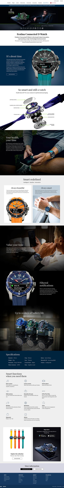
Festina Connected D
Timeless · Elegant · Refined
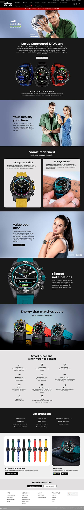
Lotus Hybrid Connected
Modern · Dynamic · Feature-driven
This side-by-side comparison highlights how a single design system can support different brand personalities without compromising usability or clarity.
Mobile adaptations and content prioritization were addressed earlier in the case study.
Key takeaways & learnings
This project showed how important clear communication is. Sharing design decisions early helped keep all teams aligned.
It also showed the need to balance UX and SEO. In this case, SEO needs required more content, even when a simpler design was preferred.